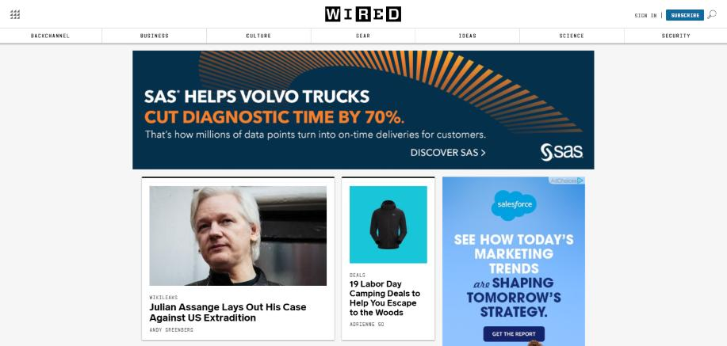
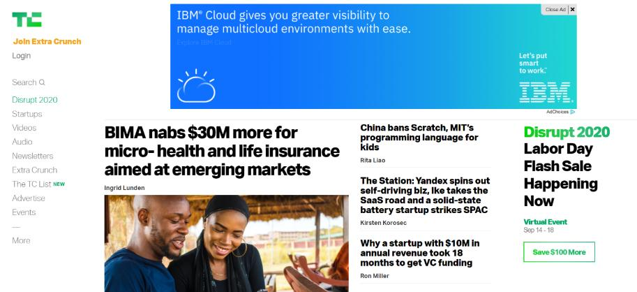
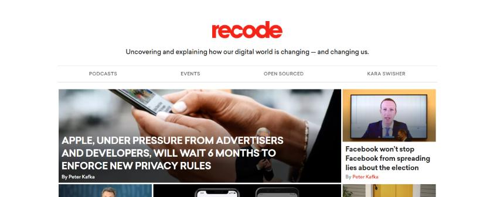

Freedom from distraction
“All change is hard at first, messy in the middle and gorgeous at the end.” ― Robin S. Sharma, The 5AM Club: Own Your Morning. Elevate Your Life.
This is some additional paragraph placeholder content. It has been written to fill the available space and show how a longer snippet of text affects the surrounding content. We'll repeat it often to keep the demonstration flowing, so be on the lookout for this exact same string of text.
Its time to ditch word and google docs
Yoy could soon view the instagram stories from the main faceboo app.
Freedom from distraction
Great things never come from comfort zone..
"All of the biggest technological inventions created by man - the airplane, the automobile, the computer - says little about his intelligence, but speaks volumes about his laziness". - Mark Kennedy (Author)
This is some additional paragraph placeholder content. It has been written to fill the available space and show how a longer snippet of text affects the surrounding content. We'll repeat it often to keep the demonstration flowing, so be on the lookout for this exact same string of text.
Top 10 Technology Blogs for Latest Tech Updates, News & Information!
This is some additional paragraph placeholder content. It's a slightly shorter version of the other highly repetitive body text used throughout. This is an example unordered list:
Stay in the Present with this Technology Blogs:
Professionals in almost every industry have trouble keeping up to date with changing tech trends. So, the best and the only way to stay relevant with technology is through the information available online!
So, if you want intuitive articles along with insights from the tech industry, you need to read blogs that are consistently updated by people that know about the trends, and market, and care about giving quality content to their readers.
Let’s take a look at some of the best technology blogs out there!!Wired

- Founder: Louis Rossetto, Jane Metcalfe0
- Year started: 1993
- Domain Authority:94
Techcrunch
- Founder:Michael Arrington, Keith Teare
- Year started:2005
- Domain Authority:94 
Recode
- Founder:Kara Swisher
- Year started:2014
- Domain Authority:93 
Invest yourself in the business verse of the tech world with one of the most popular technology blogs thriving this year- TechCrunch.
The blog publishes content on businesses related to tech, analysis of emerging trends in tech, technology news, and listings of new tech products in the market. It is one of the first publications to report broadly on tech startups and funding rounds.
TechCrunch offers knowledge about new gizmos and business-related apps. It is like a reservoir of information on Internet companies & startups around the world.
Currently, owned by VOX media, Recode gives the most updated independent technology news, analysis trends, and reviews from the most respected and informed journalists as well as bloggers in media and technology.
Recode is uncovering and explaining how our tech world is changing by focusing on the businesses of Silicon Valley.
Its founder Kara Swisher has all the connections to the latest tech tips and products, making it a robust technology blog to read!
Best Productivity books:
Abstract of these books:
- Exponential Organizations
- An exponential organization, or ExO, describes an organization that because of its ability to leverage new technologies can claim production, output or overall impact that is at least ten times larger than a regular organization in the same field.
- Good to Great
- Good to Great (2011) presents the findings of a five-year study by Jim Collins and his research team. They identified public companies that had achieved enduring success after years of mediocre performance and isolated the factors that differentiated those companies from their lackluster competitors.
- The 5 am Club
- The 5 AM Club (2018) shows how embracing a revolutionary morning routine can deliver epic results. Through the enchanting story of an entrepreneur, an artist, and their eccentric billionaire mentor, it explains how you can use the first hour of your day to drive personal growth and get the most out of life.
Summary
What is The 5 AM Club theory?
- your brain is most calm, focused, and productive when you wake.
. - forming a new habit takes about 66 days.
. - Seven hours of uninterrupted quality sleep is more beneficial than 10 hours of irregular rest. At least seven hours of quality sleep a night.
- 20 minutes to reflect on your goals via journaling, mindfulness practices, or visualization techniques, should use
. Focusingyou must develop good habits beyond your morning routine.and To gain a better understanding of the habits you can adopt in every area of your life,Robin outlines four "interior empires" to prioritize within your overall personal development..
Your thoughts can act as a self-fulfilling prophecy. When you think positively, it has a domino effect. All those positive vibes make you more likely to think creatively, manage stress, and adapt to change. To enjoy these benefits, pay attention to the information you absorb and how it shapes your thinking.
Global Colour, Culture & Creativity
Europe / Asia /Africa & the Middle East / South America
A collection of stories and blogs that celebrate vibrant cities, food traditions, festivals, rituals, and heritage handicrafts.
Live Life in Colour
My greatest passion in life – one of the reasons I love to travel – is experiencing different cultures.
When I started this blog back in 2015, it was to document the handicrafts, textiles and markets I encountered while living in Southeast Asia. As I’ve broadened my travel horizons, I’ve fallen in love with other cultural expressions as well, from food to street art to traditional music and dance.
This guide to global colour, culture and creativity brings together some of my favourite stories and round-ups. From UNESCO World Heritage Sites and Intangible Cultural Heritage to the hidden gems I uncover on my travels, you’ll find lots of educational and inspirational content from all four corners of the globe.
Take a deep dive into global culture.
{kind=link}